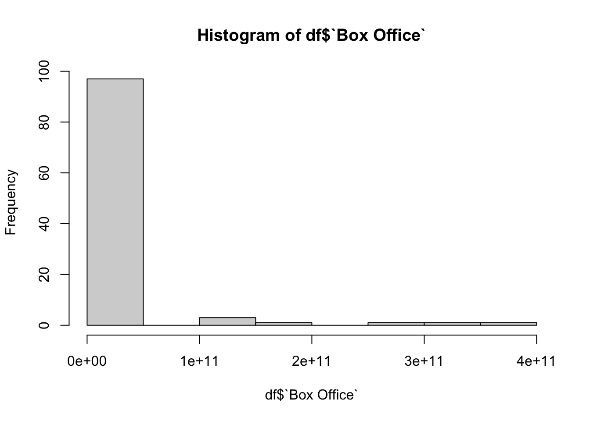
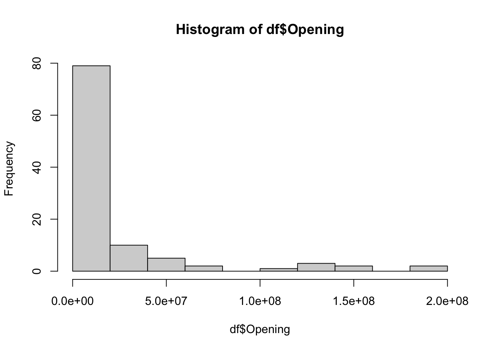
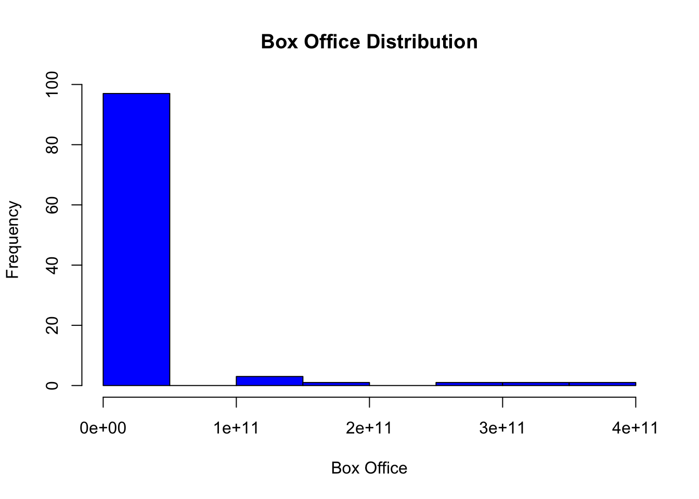
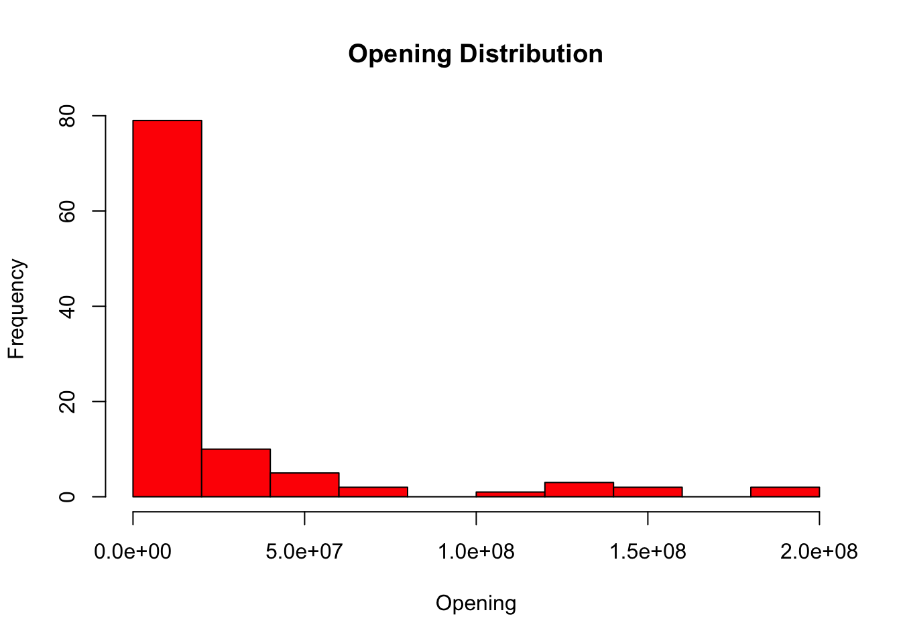
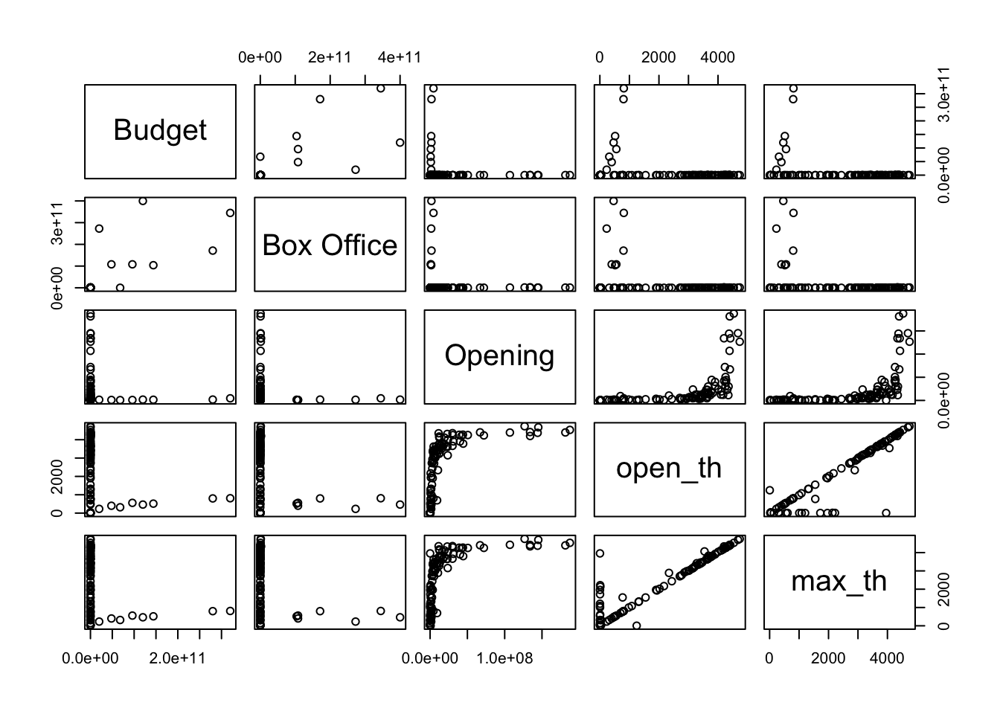
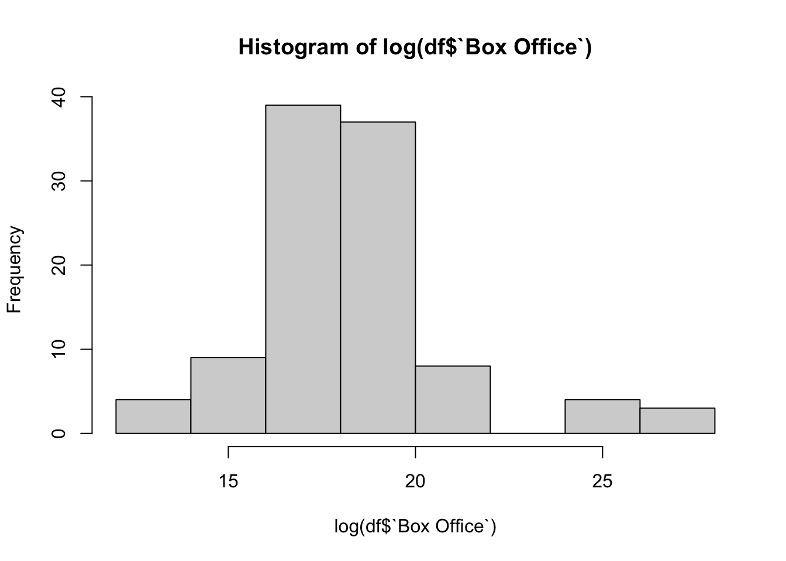
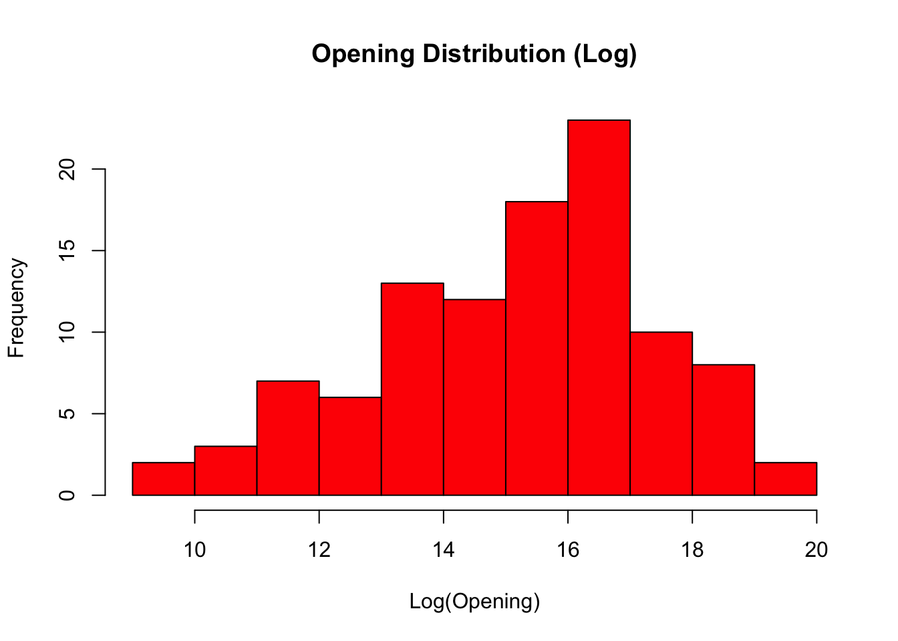
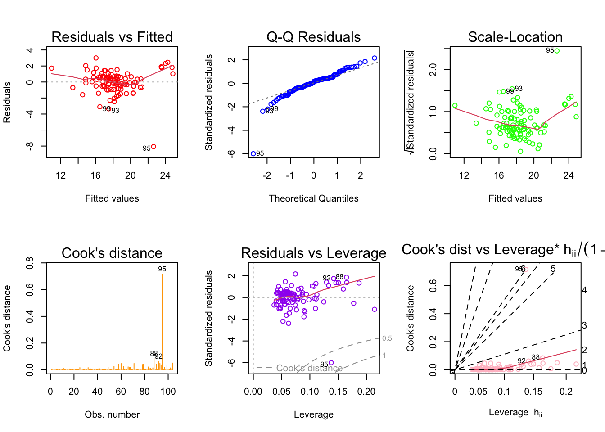

Now a days, movies are a well marketed entertainment product. Just like any other products in the market, movies are also having an allocated a marketing budget and promotional activities are done in scale. This often result in the opening weekend’s gross ticketing volume to rise. But are the pre-release promotional activities helping the movie to collect more or is it just creating a hype initially? Or does the movie’s gross collection is not at all dependant on pre release promotions? This dataset has 200 highest grossing movies of 2022. It has both the opening week’s gross as well as the total gross collection of the movies, along with other variables. Assuming that opening week’s collection is depending on the pre-release promotion, by looking on the relationship between opening week’s gross and total gross, I am trying to see how the pre-release activities help the producers earn more in boxoffice.
Research Question: To what extent does the success of a movie depend on its opening week’s collection?
Hypothesis: Opening week’s collection is positively correlated with the Box Office total collection.
Loading all the packages required for the project.
Code
library(readxl)library(tidyverse)
── Attaching core tidyverse packages ──────────────────────── tidyverse 2.0.0 ──
✔ dplyr 1.1.2 ✔ readr 2.1.4
✔ forcats 1.0.0 ✔ stringr 1.5.0
✔ ggplot2 3.4.2 ✔ tibble 3.2.1
✔ lubridate 1.9.2 ✔ tidyr 1.3.0
✔ purrr 1.0.1
── Conflicts ────────────────────────────────────────── tidyverse_conflicts() ──
✖ dplyr::filter() masks stats::filter()
✖ dplyr::lag() masks stats::lag()
ℹ Use the conflicted package (<http://conflicted.r-lib.org/>) to force all conflicts to become errors
Rank Release Budget Box Office
1 1 Top Gun: Maverick 177 million $1.493 billion
2 2 Avatar: The Way of Water 460 million $2.319 billion
3 3 Black Panther: Wakanda Forever 250 million $859.1 million
4 4 Doctor Strange in the Multiverse of Madness 200 million $955.8 million
5 5 Jurassic World: Dominion 185 million $1.004 billion
6 6 Minions: The Rise of Gru 100 million $940.5 million
Gross max_th Opening perc_tot_gr open_th Open Close
1 718732821 4751 126707459 17.6 4735 44708 44911
2 636955746 4340 134100226 21.1 4202 44911 NA
3 453474324 4396 181339761 40.0 4396 44876 NA
4 411331607 4534 187420998 45.6 4534 44687 NA
5 376851080 4697 145075625 38.5 4676 44722 44827
6 369695210 4427 107010140 28.9 4391 44743 NA
Distributor int_gross world_gross
1 Paramount Pictures 770000000 1488732821
2 20th Century Studios 1539273359 2176229105
3 Walt Disney Studios Motion Pictures 389276658 842750982
4 Walt Disney Studios Motion Pictures 544444197 955775804
5 Universal Pictures 625127000 1001978080
6 Universal Pictures 569933000 939628210
There are 14 variables with 200 rows.
COLUMN DESCRIPTION
‘Rank’: rank of the movie ‘Release’: release date of the movie ‘Budget’: The budget of the movie production ‘Box Office’: The total Box Office collection ‘Gross’: domestic gross of the movie ‘max_th’: maximum number of theaters the movie was released in ‘Opening’: gross on opening weekend ‘perc_tot_gr’: domestic percentage of the total gross ‘open_th’: number of theaters the movie opened in ‘Open’: opening date ‘Close’: closing date ‘Distributor’: name of the distributor ‘int_gross’: international gross ‘world_gross’: worldwide gross
‘Release’: release date of the movie
‘Distributor’: name of the distributor
‘Small_Dist’: Whether a small distributor or not
‘Open_date’: Date of release
‘season’: The season in which the movie was released
‘Opening’: gross on opening weekend
‘open_th’: number of theaters the movie opened in
‘max_th’: maximum number of theaters the movie was released in
Cleaning the Data
For our purpose of analysis, we need to clean and transform the data a bit.
First, the Budget and Boxoffice columns are cleaned using stringr function so that the column values are numeric. We are getting rid of the character part in those values including ‘$’ and the value unit. Also, there are certain values which are in Indian Rupees and South Korean won. So we need to convert thoses values to US dollars. The data for columns Budget and Box office were taken from Wikipedia.
Since the original dataset from Kaggle had a column named world_gross, we can compare both variables and assume that the highest value in either of the column can be considerd as the final world_gross.
We can count the number of movies in the list for each distributor and any distributor who don’t have more than 3 movies in their name can be considered as a smaller distributor and thus assuming that they won’t have cash rich promotional campaigns that would lead to an audience pull to the theatre in the initial week.
We can convert the dbl to date format and set the reference date so that the dates are correct. After that, from the Open_date, we can categorize thsoe dates to the season so that it can be used as a confounder. Seasons might have some effect on the theatre footfall and thereby, box office collections.
Code
df$Open_date <-as.Date(df$Open, origin ="1899-12-30")# Create a new column with the season for each datedf <- df %>%mutate(season =case_when(between(month(Open_date), 3, 5) ~"Spring",between(month(Open_date), 6, 8) ~"Summer",between(month(Open_date), 9, 11) ~"Fall",TRUE~"Winter" ))
Checking for NA values in each variable. There are 90 NA values in Budget variable, 38 in Box Office, 155 in Close date variable and 3 in int_gross. All othe variables seems to be good in terms of NA values.
Since 155 values of Close are NAs, it is better not to include that variable in the analysis. Most of the NA values are for the movies by small distributors, which need to be noted.
Code
df <-subset(df, select =-Close)df <-na.omit(df)# Checking for NA'scolSums(is.na(df))
Rank Release Budget Box Office
Min. : 1.00 Length:104 Min. :1.500e+05 Min. :3.250e+05
1st Qu.: 26.75 Class :character 1st Qu.:1.665e+07 1st Qu.:2.170e+07
Median : 56.50 Mode :character Median :3.550e+07 Median :6.535e+07
Mean : 67.90 Mean :1.059e+10 Mean :1.467e+10
3rd Qu.:102.50 3rd Qu.:9.000e+07 3rd Qu.:1.966e+08
Max. :196.00 Max. :3.200e+11 Max. :4.000e+11
Gross max_th Opening perc_tot_gr
Min. : 325042 Min. : 5 Min. : 8416 Min. : 0.10
1st Qu.: 3755174 1st Qu.:1005 1st Qu.: 825579 1st Qu.:21.25
Median : 17247468 Median :3131 Median : 5128384 Median :31.85
Mean : 67815629 Mean :2584 Mean : 20890734 Mean :29.89
3rd Qu.: 69210756 3rd Qu.:3848 3rd Qu.: 19126885 3rd Qu.:39.85
Max. :718732821 Max. :4751 Max. :187420998 Max. :62.90
open_th Open Distributor int_gross
Min. : 2.0 Min. :44568 Length:104 Min. :6.752e+04
1st Qu.: 661.5 1st Qu.:44673 Class :character 1st Qu.:2.542e+06
Median :3075.0 Median :44768 Mode :character Median :2.467e+07
Mean :2400.9 Mean :44757 Mean :8.879e+07
3rd Qu.:3770.0 3rd Qu.:44841 3rd Qu.:6.163e+07
Max. :4735.0 Max. :44925 Max. :1.539e+09
world_gross Unit BXUnit Count
Min. :8.416e+03 Length:104 Length:104 Min. : 1.000
1st Qu.:9.576e+06 Class :character Class :character 1st Qu.: 4.750
Median :4.348e+07 Mode :character Mode :character Median : 9.000
Mean :1.563e+08 Mean : 8.721
3rd Qu.:1.445e+08 3rd Qu.:12.000
Max. :2.176e+09 Max. :19.000
Small_Dist Open_date season
Min. :0.0000 Min. :2022-01-07 Length:104
1st Qu.:0.0000 1st Qu.:2022-04-22 Class :character
Median :0.0000 Median :2022-07-25 Mode :character
Mean :0.2115 Mean :2022-07-15
3rd Qu.:0.0000 3rd Qu.:2022-10-07
Max. :1.0000 Max. :2022-12-30
Let’s look on the distribution of data
Code
hist(df$`Box Office`)

Code
hist(df$Opening)

Code
# Plot histogram for "Box Office" variable with colorshist(df$`Box Office`, col ="blue", main ="Box Office Distribution", xlab ="Box Office")

Code
# Plot histogram for "Opening" variable with colorshist(df$Opening, col ="red", main ="Opening Distribution", xlab ="Opening")

Check correlation between Box Office and Opening
Code
cor.test(df$Opening, df$`Box Office`)
Pearson's product-moment correlation
data: df$Opening and df$`Box Office`
t = -1.0944, df = 102, p-value = 0.2764
alternative hypothesis: true correlation is not equal to 0
95 percent confidence interval:
-0.29421354 0.08665663
sample estimates:
cor
-0.1077295
Code
cor.test(log(df$Opening), log(df$`Box Office`))
Pearson's product-moment correlation
data: log(df$Opening) and log(df$`Box Office`)
t = 4.8371, df = 102, p-value = 4.681e-06
alternative hypothesis: true correlation is not equal to 0
95 percent confidence interval:
0.2610906 0.5765810
sample estimates:
cor
0.4319587
The data appears to be skewed. Therefore we can try some data transformation. Log transformation would be the first option. Let’s visualize the correlation of variables in the dataset.
Code
# Subset the desired variablespairs_df <- df[, c("Budget", "Box Office", "Opening", "open_th", "max_th")]# Create a scatterplot matrix with colorspairs(pairs_df, col =rainbow(length(pairs_df)), pch =19)

From the visualization, we can conclude that all the variables are correlated by open_th and max_th are moving exactly the same in the graph which means we should drop one of them to avoid the multicollinearity.
Code
# Plot histogram for the logarithm of "Box Office" variable with colorshist(log(df$`Box Office`), col ="blue", main ="Box Office Distribution (Log)", xlab ="Log(Box Office)")

Code
# Plot histogram for the logarithm of "Opening" variable with colorshist(log(df$Opening), col ="red", main ="Opening Distribution (Log)", xlab ="Log(Opening)")

The log transformation made the data look like a normal distribution.
Running different models to get the best fit
Log transformed model with only the predictor and the dependant variable
Code
# Fit the multiple regression model using the log-transformed datamodel1 <-lm(log(`Box Office`) ~log(Opening), data = df)# Print the model summary#summary(model1)#plot(model1)
Selecting a model and Interpretation of the result
Now that we have multiple models, we can select the best model out of them using following criteria; a) R-squared b) Adjusted R-squared c) PRESS d) AIC (Akaike Information Criterion) e) BIC (Bayesian Information Criterion)
In the model selection process, we can follow the rule of thumb as, for R-squared and Adjusted R-square, higher is better while for PRESS, AIC and BIC, lower is better.
Create a functions to get R-squared, Adjusted R-squared & PRESS
Out of all the models we ran, model3 looks as the best fit.
The linear regression model predicts the logarithm of Box Office collections based on the logarithm of Opening weekend collections, logarithm of Budget, number of theaters the movie opened in, Small_Dist (a binary variable indicating whether the distributor is small or not), and the season in which the movie was released (Spring, Summer, or Winter).
The coefficients of the independent variables show the direction and magnitude of their effect on the dependent variable. The p-value associated with each coefficient indicates whether the coefficient is statistically significant or not.
The intercept coefficient is -3.845, which means that if all independent variables are zero, the model predicts that the logarithm of Box Office collections is -3.845. However, since all the independent variables are not zero in practice, this value is not meaningful.
The coefficient of the logarithm of Opening weekend collections is 0.792, which means that a one percent increase in Opening weekend collections is associated with a 0.792 percent increase in Box Office collections.
The coefficient of the logarithm of Budget is 0.642, which means that a one percent increase in Budget is associated with a 0.642 percent increase in Box Office collections.
The coefficient of the number of theaters the movie opened in (open_th) is negative (-0.00068), which means that as the number of theaters increases by one, the predicted logarithm of Box Office collections decreases by 0.00068. This is something to be studied further, as it goes against our logic and expectation.
The coefficient of Small_Dist is 0.649, which means that the Box Office collections of movies released by small distributors are 0.649 times higher than those of movies released by large distributors, holding other variables constant. This also need more detailed study.
The coefficients associated with season indicate the difference in Box Office collections between movies released in that season and movies released in Fall (omitted reference level). For example, the coefficient of season Spring is 0.88, which means that the predicted Box Office collections of movies released in Spring are 0.88 times higher than those of movies released in Fall.
The adjusted R-squared of the model is 0.7155, which means that 71.55% of the variation in the logarithm of Box Office collections can be explained by the independent variables in the model.
Visualising the regression model.
Code
library(ggplot2)# Set the color palettecolors <-c("red", "blue", "green", "orange", "purple", "pink")# Create a blank plot with the desired layoutpar(mfrow=c(2,3))# Loop through the diagnostic plots and assign colorsfor (i in1:6) {plot(model3, which = i, col = colors[i])}

The Scale-Location plot suggests some level of heteroskedacity. So, it is better to check if there is a serious problem of heteroskedacity,we can run Breusch-Pagan test.
Code
library(lmtest)
Loading required package: zoo
Attaching package: 'zoo'
The following objects are masked from 'package:base':
as.Date, as.Date.numeric
Code
bptest(model3)
studentized Breusch-Pagan test
data: model3
BP = 16.322, df = 7, p-value = 0.02233
The p-value for Breusch-Pagan test is 0.02233. This is possibly a heteroskedacity. We need to look more into this.
Conclusion:
The model that we build shows that the Box Office collection of a movie is affected positively by the Opening week collection. 1 percentage of increase in Opening week collection results in 0.792 percent increase in Box office collection after taking into account the intercept(-3.845). But the Breusch-Pagan test for heteroskedacity gives a low p-value which suggests that the model is showing heteroskedacity.
The dataset has only 200 rows out of which 96 rows were dropped as they have NA values. Also, many movies in this dataset had Box office collections much lesser than their budget. But that does not necessarily mean that those movies made a loss. In the age of online streaming platforms, many movies are making money not from Box Office only. But our study was focused only on the revenue from theatre collection. Also, in the future study, the variable transformation to address the heteroskedacity should be done.
References:
Nasir, Suphan & Öcal, Figen. (2016). Film Marketing: The Impact of Publicity Activities on Demand Generation. 10.4018/978-1-5225-0143-5.ch019.
Elizabeth Cooper-Martin (1991) ,“Consumers and Movies: Some Findings on Experiential Products”, in NA - Advances in Consumer Research Volume 18, eds. Rebecca H. Holman and Michael R. Solomon, Provo, UT : Association for Consumer Research, Pages: 372-378.
Kaggle.com (Original dataset)
Wikipedia.com (Movie pages to get budget and box office collections)
Source Code
---title: "Final Project 603"author: "Jerin Jacob"description: "Final project qmd file for 603"date: "03/10/2023"format: html: toc: true code-fold: true code-copy: true code-tools: truecategories: - finalproject---Now a days, movies are a well marketed entertainment product. Just like any other products in the market, movies are also having an allocated a marketing budget and promotional activities are done in scale. This often result in the opening weekend's gross ticketing volume to rise. But are the pre-release promotional activities helping the movie to collect more or is it just creating a hype initially? Or does the movie's gross collection is not at all dependant on pre release promotions? This dataset has 200 highest grossing movies of 2022. It has both the opening week's gross as well as the total gross collection of the movies, along with other variables. Assuming that opening week's collection is depending on the pre-release promotion, by looking on the relationship between opening week's gross and total gross, I am trying to see how the pre-release activities help the producers earn more in boxoffice.**Research Question**: To what extent does the success of a movie depend on its opening week's collection?**Hypothesis**: Opening week's collection is positively correlated with the Box Office total collection.Loading all the packages required for the project. ```{r, echo=T}library(readxl)library(tidyverse)library(lubridate)library(dplyr)library(stringr)```## Reading the data```{r}df <-read_excel("_data/project_data.xlsx") |>as.data.frame()head(df)```There are 14 variables with 200 rows.### **COLUMN DESCRIPTION**'Rank': rank of the movie'Release': release date of the movie'Budget': The budget of the movie production'Box Office': The total Box Office collection'Gross': domestic gross of the movie'max_th': maximum number of theaters the movie was released in'Opening': gross on opening weekend'perc_tot_gr': domestic percentage of the total gross'open_th': number of theaters the movie opened in'Open': opening date'Close': closing date'Distributor': name of the distributor'int_gross': international gross'world_gross': worldwide gross- 'Release': release date of the movie- 'Distributor': name of the distributor- 'Small_Dist': Whether a small distributor or not- - 'Open_date': Date of release- 'season': The season in which the movie was released- 'Opening': gross on opening weekend- 'open_th': number of theaters the movie opened in- 'max_th': maximum number of theaters the movie was released in## Cleaning the DataFor our purpose of analysis, we need to clean and transform the data a bit. First, the Budget and Boxoffice columns are cleaned using stringr function so that the column values are numeric. We are getting rid of the character part in those values including '$' and the value unit. Also, there are certain values which are in Indian Rupees and South Korean won. So we need to convert thoses values to US dollars. The data for columns Budget and Box office were taken from Wikipedia. ```{r}df <- df |>mutate(Budget =gsub("\\$", "", Budget)) |>mutate(Budget =sub(".*-", "", Budget)) |>mutate(`Box Office`=gsub("\\$", "", `Box Office`)) df[c('Budget', 'Unit')] <-str_split_fixed(df$Budget, ' ', 2)df$Budget <-as.numeric(df$Budget)df$Budget <-ifelse(df$Unit =="million", df$Budget *1000000,ifelse(df$Unit =="billion", df$Budget *1000000000,ifelse(df$Unit =="Kmillion", df$Budget *1000000*0.00074,ifelse(df$Unit =="Kbillion", df$Budget *1000000000*0.00074,ifelse(df$Unit =="crore", df$Budget *10000000*80, df$Budget)))))df[c('Box Office', 'BXUnit')] <-str_split_fixed(df$`Box Office`, ' ', 2)df$`Box Office`<-as.numeric(df$`Box Office`)df$`Box Office`<-ifelse(df$BXUnit =="million", df$`Box Office`*1000000,ifelse(df$BXUnit =="billion", df$`Box Office`*1000000000,ifelse(df$BXUnit =="Kmillion", df$`Box Office`*1000000*0.00074,ifelse(df$BXUnit =="Kbillion", df$`Box Office`*1000000000*0.00074,ifelse(df$BXUnit =="crore", df$`Box Office`*10000000*80, df$`Box Office`)))))```Since the original dataset from Kaggle had a column named world_gross, we can compare both variables and assume that the highest value in either of the column can be considerd as the final world_gross. ```{r}df$`Box Office`<-ifelse(df$`Box Office`< df$world_gross, df$world_gross, df$`Box Office`)```We can count the number of movies in the list for each distributor and any distributor who don't have more than 3 movies in their name can be considered as a smaller distributor and thus assuming that they won't have cash rich promotional campaigns that would lead to an audience pull to the theatre in the initial week. ```{r}df <- df %>%group_by(Distributor) %>%mutate(Count=n_distinct(`Box Office`)) df$Small_Dist <-ifelse(df$Count <=3, 1, 0)```We can convert the dbl to date format and set the reference date so that the dates are correct. After that, from the Open_date, we can categorize thsoe dates to the season so that it can be used as a confounder. Seasons might have some effect on the theatre footfall and thereby, box office collections.```{r}df$Open_date <-as.Date(df$Open, origin ="1899-12-30")# Create a new column with the season for each datedf <- df %>%mutate(season =case_when(between(month(Open_date), 3, 5) ~"Spring",between(month(Open_date), 6, 8) ~"Summer",between(month(Open_date), 9, 11) ~"Fall",TRUE~"Winter" ))``````{r}head(df)```Checking for NA values in each variable. There are 90 NA values in Budget variable, 38 in Box Office, 155 in Close date variable and 3 in int_gross. All othe variables seems to be good in terms of NA values.```{r}colSums(is.na(df))table(df$Small_Dist)```Since 155 values of Close are NAs, it is better not to include that variable in the analysis. Most of the NA values are for the movies by small distributors, which need to be noted.```{r}df <-subset(df, select =-Close)df <-na.omit(df)# Checking for NA'scolSums(is.na(df))```Have an idea about the structure of the dataset.```{r}str(df)```Using the glimpse() function, let's have a look at how our data would look like!```{r}glimpse(df )```## Summary of each variables```{r}summary(df)```Let's look on the distribution of data```{r}hist(df$`Box Office`)hist(df$Opening)# Plot histogram for "Box Office" variable with colorshist(df$`Box Office`, col ="blue", main ="Box Office Distribution", xlab ="Box Office")# Plot histogram for "Opening" variable with colorshist(df$Opening, col ="red", main ="Opening Distribution", xlab ="Opening")```### Check correlation between Box Office and Opening```{r}cor.test(df$Opening, df$`Box Office`)cor.test(log(df$Opening), log(df$`Box Office`))```The data appears to be skewed. Therefore we can try some data transformation. Log transformation would be the first option.Let's visualize the correlation of variables in the dataset.```{r}# Subset the desired variablespairs_df <- df[, c("Budget", "Box Office", "Opening", "open_th", "max_th")]# Create a scatterplot matrix with colorspairs(pairs_df, col =rainbow(length(pairs_df)), pch =19)```From the visualization, we can conclude that all the variables are correlated by open_th and max_th are moving exactly the same in the graph which means we should drop one of them to avoid the multicollinearity.```{r}# Plot histogram for the logarithm of "Box Office" variable with colorshist(log(df$`Box Office`), col ="blue", main ="Box Office Distribution (Log)", xlab ="Log(Box Office)")# Plot histogram for the logarithm of "Opening" variable with colorshist(log(df$Opening), col ="red", main ="Opening Distribution (Log)", xlab ="Log(Opening)")```The log transformation made the data look like a normal distribution.## Running different models to get the best fitLog transformed model with only the predictor and the dependant variable```{r}# Fit the multiple regression model using the log-transformed datamodel1 <-lm(log(`Box Office`) ~log(Opening), data = df)# Print the model summary#summary(model1)#plot(model1)```Log transformation for all continous variables.```{r}model2 <-lm(log(`Box Office`) ~log(Opening) +log(Budget) +log(open_th) + Small_Dist + season, data = df)#summary(model2)#plot(model2)```The R-square has significantly improved for this model. Let us try more models.Log transformation for only Box Office, Opening and Budget. ```{r}model3 <-lm(log(`Box Office`) ~log(Opening) +log(Budget) + open_th + Small_Dist + season, data = df)#summary(model3)#plot(model3)```Log transformation for only Box Office, Opening and Budget. Removing season confounder.```{r}model4 <-lm(log(`Box Office`) ~log(Opening) +log(Budget) + open_th + Small_Dist, data = df)#summary(model4)#plot(model4)```R square values are further below the previous model.Let us try the log transformed model with only the Budget and Small_Distributor as confounders.```{r}model5 <-lm(log(`Box Office`) ~log(Opening) +log(Budget) + open_th, data = df)#summary(model5)#plot(model5)```Now, we can run a log transformed model with only the Opening and Budget.```{r}model6 <-lm(log(`Box Office`) ~log(Opening) +log(Budget), data = df)#summary(model6)#plot(model6)```Let us run models after quadratic transformation```{r}model_quad1 <-lm(log(`Box Office`) ~poly(Opening, 2, raw=TRUE) +log(Budget) + open_th + Small_Dist + season, data = df)#summary(model_quad1)#plot(model_quad1)```## Selecting a model and Interpretation of the resultNow that we have multiple models, we can select the best model out of them using following criteria;a) R-squaredb) Adjusted R-squaredc) PRESSd) AIC (Akaike Information Criterion)e) BIC (Bayesian Information Criterion)In the model selection process, we can follow the rule of thumb as, for R-squared and Adjusted R-square, higher is better while for PRESS, AIC and BIC, lower is better.Create a functions to get R-squared, Adjusted R-squared & PRESS ```{r}rsquared <-function(fit) summary(fit)$r.squaredadj_rsquared <-function(fit) summary(fit)$adj.r.squaredPRESS <-function(fit) { pr <-residuals(fit)/(1-lm.influence(fit)$hat)sum(pr^2)}```For AIC and BIC, the functions AIC() and BIC() can be usedNow, applying the functions to model objects```{r}models <-list(model1, model2, model3, model4, model5, model6, model_quad1)model_comparison <-data.frame(models =c('model1', 'model2', 'model3', 'model4', 'model5', 'model6', 'model_quad1'),rSquared =sapply(models, rsquared),adj_rSquared =sapply(models, adj_rsquared),PRESS =sapply(models, PRESS),AIC =sapply(models, AIC),BIC =sapply(models, BIC)) |>print()``````{r}library(stargazer)stargazer(model1, model2, model3, model4, model5, model6, model_quad1, type ='text')```Out of all the models we ran, model3 looks as the best fit.The linear regression model predicts the logarithm of Box Office collections based on the logarithm of Opening weekend collections, logarithm of Budget, number of theaters the movie opened in, Small_Dist (a binary variable indicating whether the distributor is small or not), and the season in which the movie was released (Spring, Summer, or Winter). The coefficients of the independent variables show the direction and magnitude of their effect on the dependent variable. The p-value associated with each coefficient indicates whether the coefficient is statistically significant or not.The intercept coefficient is -3.845, which means that if all independent variables are zero, the model predicts that the logarithm of Box Office collections is -3.845. However, since all the independent variables are not zero in practice, this value is not meaningful.The coefficient of the logarithm of Opening weekend collections is 0.792, which means that a one percent increase in Opening weekend collections is associated with a 0.792 percent increase in Box Office collections.The coefficient of the logarithm of Budget is 0.642, which means that a one percent increase in Budget is associated with a 0.642 percent increase in Box Office collections.The coefficient of the number of theaters the movie opened in (open_th) is negative (-0.00068), which means that as the number of theaters increases by one, the predicted logarithm of Box Office collections decreases by 0.00068. This is something to be studied further, as it goes against our logic and expectation.The coefficient of Small_Dist is 0.649, which means that the Box Office collections of movies released by small distributors are 0.649 times higher than those of movies released by large distributors, holding other variables constant. This also need more detailed study.The coefficients associated with season indicate the difference in Box Office collections between movies released in that season and movies released in Fall (omitted reference level). For example, the coefficient of season Spring is 0.88, which means that the predicted Box Office collections of movies released in Spring are 0.88 times higher than those of movies released in Fall.The adjusted R-squared of the model is 0.7155, which means that 71.55% of the variation in the logarithm of Box Office collections can be explained by the independent variables in the model.## Visualising the regression model.```{r}library(ggplot2)# Set the color palettecolors <-c("red", "blue", "green", "orange", "purple", "pink")# Create a blank plot with the desired layoutpar(mfrow=c(2,3))# Loop through the diagnostic plots and assign colorsfor (i in1:6) {plot(model3, which = i, col = colors[i])}```The Scale-Location plot suggests some level of heteroskedacity. So, it is better to check if there is a serious problem of heteroskedacity,we can run Breusch-Pagan test.```{r}library(lmtest)bptest(model3)```The p-value for Breusch-Pagan test is 0.02233. This is possibly a heteroskedacity. We need to look more into this.## Conclusion:The model that we build shows that the Box Office collection of a movie is affected positively by the Opening week collection. 1 percentage of increase in Opening week collection results in 0.792 percent increase in Box office collection after taking into account the intercept(-3.845). But the Breusch-Pagan test for heteroskedacity gives a low p-value which suggests that the model is showing heteroskedacity. The dataset has only 200 rows out of which 96 rows were dropped as they have NA values. Also, many movies in this dataset had Box office collections much lesser than their budget. But that does not necessarily mean that those movies made a loss. In the age of online streaming platforms, many movies are making money not from Box Office only. But our study was focused only on the revenue from theatre collection. Also, in the future study, the variable transformation to address the heteroskedacity should be done. ## References:1. Nasir, Suphan & Öcal, Figen. (2016). Film Marketing: The Impact of Publicity Activities on Demand Generation. 10.4018/978-1-5225-0143-5.ch019.2. *Elizabeth Cooper-Martin (1991) ,"Consumers and Movies: Some Findings on Experiential Products", in NA - Advances in Consumer Research Volume 18, eds. Rebecca H. Holman and Michael R. Solomon, Provo, UT : Association for Consumer Research, Pages: 372-378.*3. Kaggle.com (Original dataset)4. Wikipedia.com (Movie pages to get budget and box office collections)